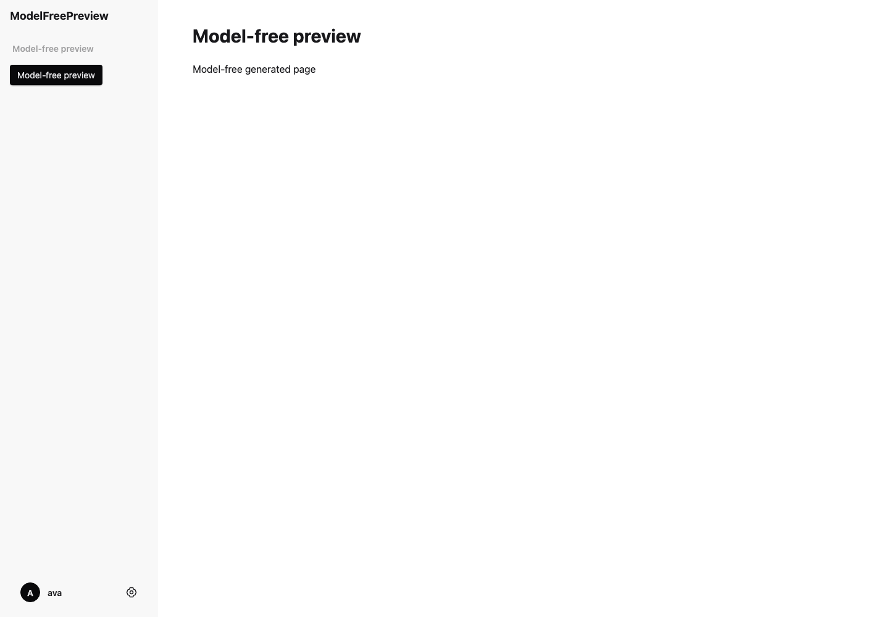

Passed requested browser audits; tests/integration/can-dev-server/ModelFreePreview.can

{
"schema": "can.dev.frontend-capture.v1",
"source": "tests/integration/can-dev-server/ModelFreePreview.can",
"executionRoot": "/private/var/folders/5x/bpszcvmj1tddmjp35y21dt680000gn/T/can-frontend-snapshot-vp9zusor",
"scope": "actual compiled dev preview; requested routes and read-only browser audit",
"routes": [
"/"
],
"generation": "not-tested",
"visualVerdict": "Assistant inspected desktop and mobile screenshots: sparse fixture shell is legible, aligned and responsive, with no visible clipping. Prompted design and rich states were not exercised.",
"examples": null,
"pages": [
{
"viewport": "desktop",
"route": "/",
"pageErrors": [],
"consoleErrors": [],
"failedResources": [],
"httpErrors": [],
"status": 200,
"contentType": "text/html;charset=utf-8",
"title": "Model-free preview — ModelFreePreview",
"audit": {
"mainVisible": true,
"canonicalStylesheetLoaded": true,
"horizontalOverflow": false,
"controlCount": 2,
"unlabelledControls": [],
"imageCount": 0,
"brokenImages": 0,
"imagesMissingAlt": 0
},
"screenshot": "desktop-01.png"
},
{
"viewport": "mobile",
"route": "/",
"pageErrors": [],
"consoleErrors": [],
"failedResources": [],
"httpErrors": [],
"status": 200,
"contentType": "text/html;charset=utf-8",
"title": "Model-free preview — ModelFreePreview",
"audit": {
"mainVisible": true,
"canonicalStylesheetLoaded": true,
"horizontalOverflow": false,
"controlCount": 2,
"unlabelledControls": [],
"imageCount": 0,
"brokenImages": 0,
"imagesMissingAlt": 0
},
"screenshot": "mobile-01.png"
}
],
"failures": [],
"ok": true,
"check": {
"schema": "can.dev.check.v1",
"session": "6adad96de90ab20f47d36efe5c442f5b827795fe50ba8c9d",
"revision": "r1",
"source_revision": "sha256:7a9f010deca0e6a601bc9836e182983c20596b051c2615520285567a273ea24e",
"current": true,
"evidence": {
"capture_complete": true,
"analysis_complete": true,
"diagnostics_reported": 0,
"diagnostics_omitted": 0,
"diagnostics_service_omitted": 0
},
"focus": null,
"next_diagnostics": null,
"preview": "ready",
"preview_reason": null,
"state": "valid"
},
"revision": "r1",
"source_revision": "sha256:7a9f010deca0e6a601bc9836e182983c20596b051c2615520285567a273ea24e",
"serving_build": "preview-f432b178-3853-488a-a2a5-2a2883d21618",
"app": "ModelFreePreview",
"runtimeScope": "Frozen snapshot; ongoing live Interfaces edits excluded; see frontend-snapshot.json metadata",
"cleanup": {
"owned": true,
"released": true,
"note": "Owned app endpoint absence independently verified after stop acknowledgement failure; retained browser results reused"
}
}